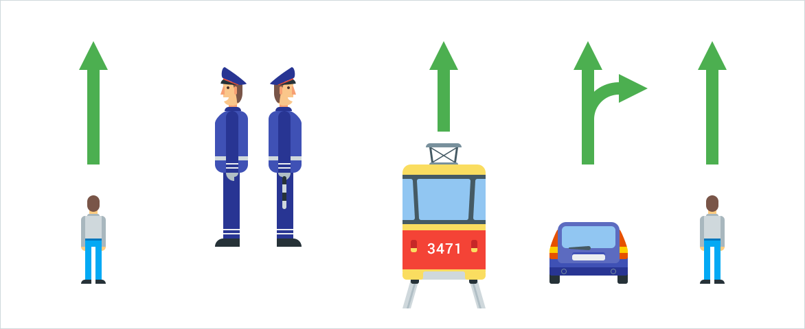
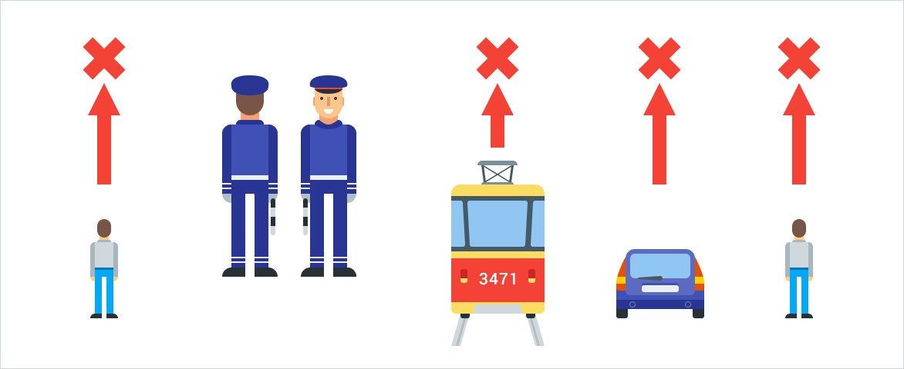
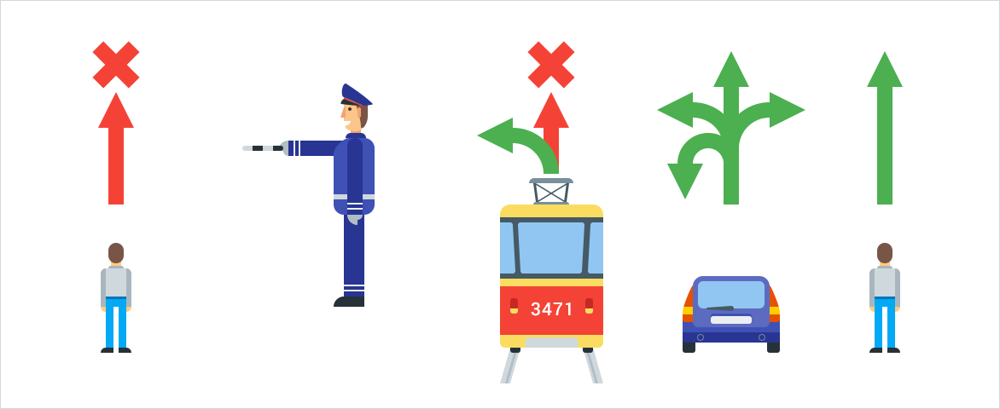
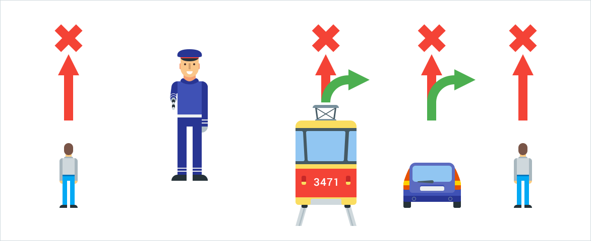
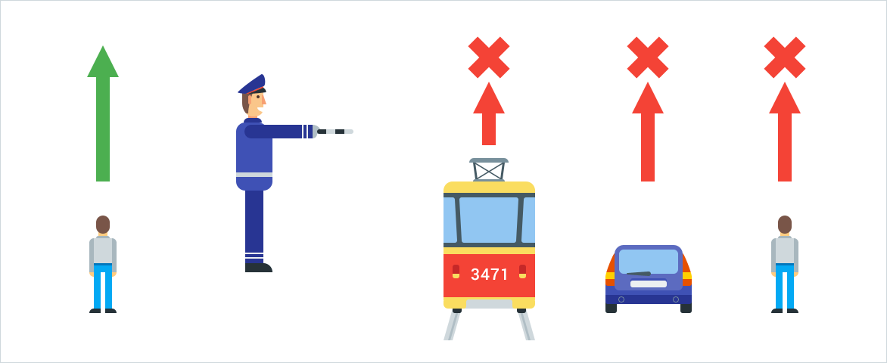
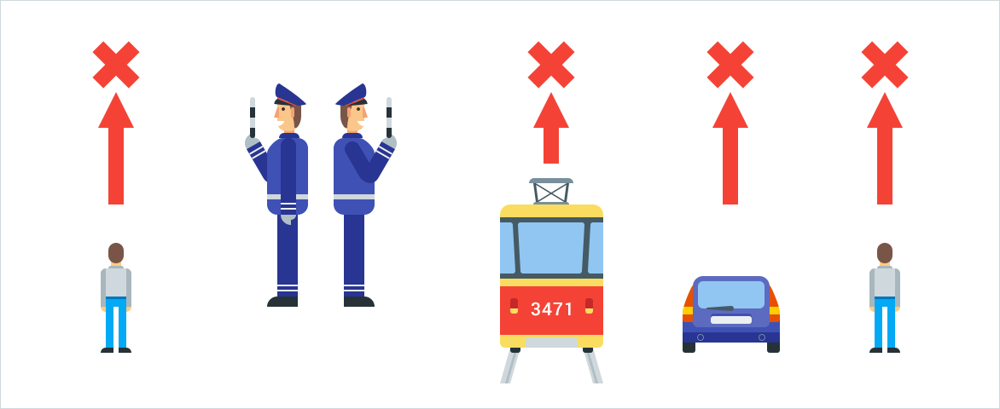

6.1. В светофорах применяются световые сигналы зеленого, желтого, красного и бело-лунного цвета.
В зависимости от назначения сигналы светофора могут быть круглые, в виде стрелки (стрелок), силуэта пешехода или велосипеда и X-образные.
Светофоры с круглыми сигналами могут иметь одну или две дополнительные секции с сигналами в виде зеленой стрелки (стрелок), которые располагаются на уровне зеленого круглого сигнала.
6.2. Круглые сигналы светофора имеют следующие значения:
- ЗЕЛЕНЫЙ СИГНАЛ разрешает движение;
- ЗЕЛЕНЫЙ МИГАЮЩИЙ СИГНАЛ разрешает движение и информирует, что время его действия истекает и вскоре будет включен запрещающий сигнал (для информирования водителей о времени в секундах, остающемся до конца горения зеленого сигнала, могут применяться цифровые табло);
- ЖЕЛТЫЙ СИГНАЛ запрещает движение, кроме случаев, предусмотренных пунктом 6.14 Правил, и предупреждает о предстоящей смене сигналов;
- ЖЕЛТЫЙ МИГАЮЩИЙ СИГНАЛ разрешает движение и информирует о наличии нерегулируемого перекрестка или пешеходного перехода, предупреждает об опасности;
- КРАСНЫЙ СИГНАЛ, в том числе мигающий, запрещает движение.
Сочетание красного и желтого сигналов запрещает движение и информирует о предстоящем включении зеленого сигнала.
6.3. Сигналы светофора, выполненные в виде стрелок красного, желтого и зеленого цветов, имеют то же значение, что и круглые сигналы соответствующего цвета, но их действие распространяется только на направление (направления), указываемое стрелками. При этом стрелка, разрешающая поворот налево, разрешает и разворот, если это не запрещено соответствующим дорожным знаком.
Такое же значение имеет зеленая стрелка в дополнительной секции. Выключенный сигнал дополнительной секции или включенный световой сигнал красного цвета ее контура означает запрещение движения в направлении, регулируемом этой секцией. (абзац изменён постановлением Правительства РФ от 02.04.2015 № 315)
6.4. Если на основной зеленый сигнал светофора нанесена черная контурная стрелка (стрелки), то она информирует водителей о наличии дополнительной секции светофора и указывает иные разрешенные направления движения, чем сигнал дополнительной секции.
Информационная световая секция в виде силуэта пешехода и стрелки с мигающим сигналом бело-лунного цвета, расположенная под светофором, информирует водителя о том, что на пешеходном переходе, в направлении которого он поворачивает, включен сигнал светофора, разрешающий движение пешеходам. Направление стрелки указывает на пешеходный переход, на котором включен сигнал светофора, разрешающий движение пешеходам. (абзац введен Постановлением Правительства РФ от 06.10.2022 № 1769)
6.5. Если сигнал светофора выполнен в виде силуэта пешехода, то его действие распространяется только на пешеходов. Если сигнал светофора выполнен в виде велосипеда, то его действие распространяется на велосипедистов и водителей мопедов, движущихся по велосипедной полосе. Лица, использующие для передвижения средства индивидуальной мобильности в соответствии с пунктом 24.2(1) настоящих Правил, должны руководствоваться сигналами светофора в виде силуэта пешехода либо велосипеда при их движении соответственно по тротуару, пешеходной дорожке либо по велосипедной, велопешеходной дорожкам, полосе для велосипедистов. При этом зеленый сигнал разрешает, а красный сигнал запрещает движение пешеходов, велосипедистов и лиц, использующих для передвижения средства индивидуальной мобильности. (в ред. Постановления Правительства РФ от 06.10.2022 № 1769)
Для регулирования движения велосипедистов и лиц, использующих для передвижения средства индивидуальной мобильности, может использоваться также светофор с круглыми сигналами уменьшенного размера, дополненный прямоугольной табличкой белого цвета размером 200 x 200 мм с изображением велосипеда черного цвета. (в ред. Постановления Правительства РФ от 06.10.2022 № 1769)
6.6. Для информирования слепых пешеходов о возможности пересечения проезжей части световые сигналы светофора могут быть дополнены звуковым сигналом.
6.7. Для регулирования движения транспортных средств по полосам проезжей части, в частности по тем, направление движения по которым может изменяться на противоположное, применяются реверсивные светофоры с красным X-образным сигналом и зеленым сигналом в виде стрелы, направленной вниз. Эти сигналы соответственно запрещают или разрешают движение по полосе, над которой они расположены.
Основные сигналы реверсивного светофора могут быть дополнены желтым сигналом в виде стрелы, наклоненной по диагонали вниз направо или налево, включение которой информирует о предстоящей смене сигнала и необходимости перестроиться на полосу, на которую указывает стрела.
При выключенных сигналах реверсивного светофора, который расположен над полосой, обозначенной с обеих сторон разметкой
1.9  ,
въезд на эту полосу запрещен.
,
въезд на эту полосу запрещен.
6.8. Для регулирования движения трамваев, а также транспортных средств, движущихся в соответствии с пунктом 18.2 настоящих Правил по полосе для маршрутных транспортных средств, могут применяться светофоры одноцветной сигнализации с круглыми сигналами бело-лунного цвета, расположенными в виде буквы "Т". Движение разрешается только при включении одновременно нижнего сигнала и одного или нескольких верхних, из которых левый разрешает движение налево, средний - прямо, правый - направо. Если включены только три верхних сигнала, то движение запрещено. (в ред. Постановления Правительства РФ от 06.10.2022 № 1769)
6.9. Круглый бело-лунный мигающий сигнал, расположенный на железнодорожном переезде, разрешает движение транспортных средств через переезд. При выключенных мигающих бело-лунном и красном сигналах движение разрешается при отсутствии в пределах видимости приближающегося к переезду поезда (локомотива, дрезины).
6.10. Сигналы регулировщика имеют следующие значения:
РУКИ ВЫТЯНУТЫ В СТОРОНЫ ИЛИ ОПУЩЕНЫ:
-
со стороны левого и правого бока разрешено движение трамваю прямо, безрельсовым транспортным средствам прямо и направо, пешеходам разрешено переходить проезжую часть;
 -
со стороны груди и спины движение всех транспортных средств и пешеходов запрещено.

ПРАВАЯ РУКА ВЫТЯНУТА ВПЕРЕД:
-
со стороны левого бока разрешено движение трамваю налево, безрельсовым транспортным средствам во всех направлениях;
 -
со стороны груди всем транспортным средствам разрешено движение только направо;
 -
со стороны правого бока и спины движение всех транспортных средств запрещено;
 -
пешеходам разрешено переходить проезжую часть за спиной регулировщика.
РУКА ПОДНЯТА ВВЕРХ:
-
движение всех транспортных средств и пешеходов запрещено во всех направлениях, кроме случаев, предусмотренных пунктом 6.14
Правил.

Лица, использующие для передвижения средства индивидуальной мобильности, должны руководствоваться сигналами регулировщика для пешеходов. (абзац введен Постановлением Правительства РФ от 06.10.2022 № 1769)
Регулировщик может подавать жестами рук и другие сигналы, понятные водителям и пешеходам.
Для лучшей видимости сигналов регулировщик может применять жезл или диск с красным сигналом (световозвращателем).
6.11. Требование об остановке транспортного средства подается с помощью громкоговорящего устройства или жестом руки, направленной на транспортное средство. Водитель должен остановиться в указанном ему месте.
6.12. Дополнительный сигнал свистком подается для привлечения внимания участников движения.
6.13.
При запрещающем сигнале светофора (кроме реверсивного) или регулировщика водители должны остановиться перед стоп-линией
(знаком 6.16  ),
а при ее отсутствии:
),
а при ее отсутствии:
- на перекрестке — перед пересекаемой проезжей частью (с учетом пункта 13.7 Правил), не создавая помех пешеходам;
- перед железнодорожным переездом — в соответствии с пунктом 15.4 Правил;
- в других местах — перед светофором или регулировщиком, не создавая помех транспортным средствам и пешеходам, движение которых разрешено.
6.14. Водителям, которые при включении желтого сигнала или поднятии регулировщиком руки вверх не могут остановиться, не прибегая к экстренному торможению в местах, определяемых пунктом 6.13 Правил, разрешается дальнейшее движение.
Пешеходы и лица, использующие для передвижения средства индивидуальной мобильности, которые при подаче сигнала находились на проезжей части, должны освободить ее, а если это невозможно — остановиться на линии, разделяющей транспортные потоки противоположных направлений. (в ред. Постановления Правительства РФ от 06.10.2022 № 1769)
6.15. Участники дорожного движения должны выполнять требования сигналов и распоряжения регулировщика, даже если они противоречат сигналам светофора, требованиям дорожных знаков или разметки. (в ред. Постановления Правительства РФ от 06.10.2022 № 1769)
В случае если значения сигналов светофора противоречат требованиям дорожных знаков приоритета, водители должны руководствоваться сигналами светофора.
6.16. На железнодорожных переездах одновременно с красным мигающим сигналом светофора может подаваться звуковой сигнал, дополнительно информирующий участников движения о запрещении движения через переезд.